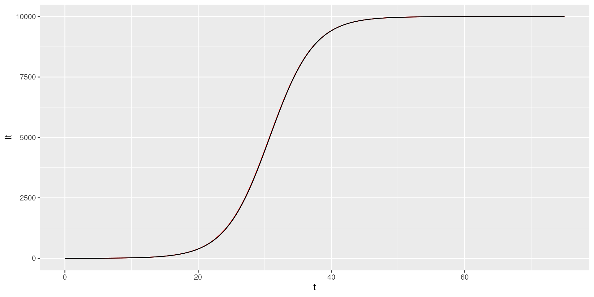
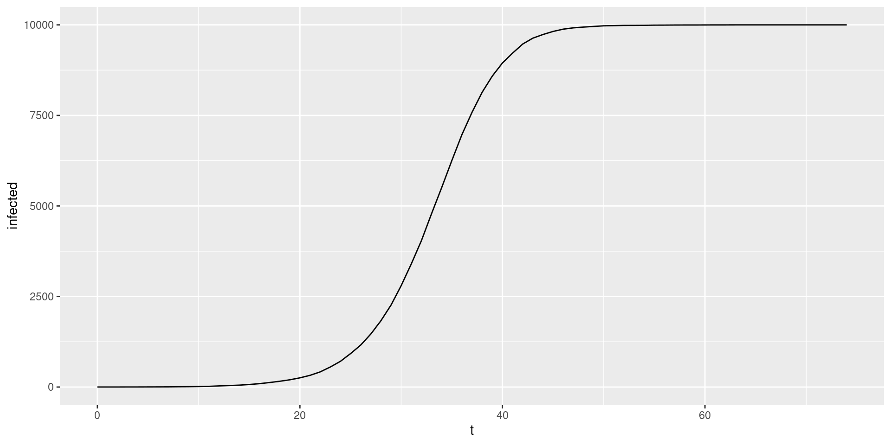
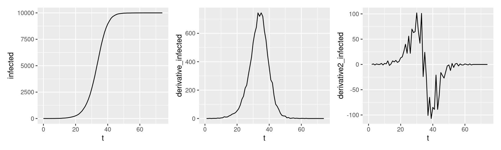

W#7 Descriptive statistics, Wisdom of Crowds, Calculus, Epidemic Models
Jan Lorenz
Descriptive Statistics
Descriptive vs. Inferential Statistics
- The process of using and analyzing summary statistics
- Solely concerned with properties of the observed data.
- Distinct from inferential statistics:
- Inference of properties of an underlying distribution given sampled observations from a larger population.
Summary Statistics are used to summarize a set of observations to communicate the largest amount of information as simple as possible.
Summary statistics
Univariate (for one variable)
- Measures of location, or central tendency
- Measures of statistical dispersion
- Measure of the shape of the distribution like skewness or kurtosis
Bivariate (for two variables)
- Measures of statistical dependence or correlation
Measures of central tendency
Measures of central tendency
Goal: For a sequence of numerical observations \(x_1,\dots,x_n\) we want to measure
- the “typical” value.
- a value summarizing the location of values on the numerical axis.
Three different ways:
- Arithmetic mean (also mean, average): Sum of the all observations divided by the number of observations \(\frac{1}{n}\sum_{i=1}^n x_i\)
- Median: Assume \(x_1 \leq x_2 \leq\dots\leq x_n\). Then the median is middlemost values in the sequence \(x_\frac{n+1}{2}\) when \(n\) odd. For \(n\) even there are two middlemost values and the median is \(\frac{x_\frac{n}{2} + x_\frac{n+1}{2}}{2}\)
- Mode: The value that appears most often in the sequence.
Philosophy of aggregation
- The mean represents total value per value.
Example: per capita income in a town is the total income per individual - The median represents the value such that half of the values are lower and higher.
In a democracy where each value is represented by one voter preferring it, the median is the value which is unbeatable by an absolute majority. Half of the people prefer higher the other half lower values. (Median voter model) - The mode represents the most common value.
In a democracy, the mode represents the winner of a plurality vote where each value runs as a candidate and the winner is the one with the most votes.
Mean, Median, Mode properties
Are all of these well defined? (That means, they deliver one unambiguous answer for any sequence.)
Mean and median, yes. The mode has no rules for a tie.
Can they by generalized to variables with ordered or even unordered categories?
Mean: No. Median: For ordered categories. Mode: For any categorical variable.
Is measure always also in the data sequence?
Mean: No. Median: Yes, for sequences of odd length. Mode: Yes.
Generalized means1
For \(x_1, \dots, x_n > 0\) and \(p\in \mathbb{R}_{\neq 0}\) the generalized mean is
\[M_p(x_1, \dots, x_n) = (\frac{1}{n}\sum_{i=1}^n x_i^p)^\frac{1}{p}\]
For \(p = 0\) it is \(M_0(x_1, \dots, x_n) = (\prod_{i=1}^n x_i)^\frac{1}{n}\).
\(M_1\) is the arithmetic mean. \(M_0\) is called the geometric mean. \(M_{-1}\) the harmonic mean.
Note: Generalized means are often only reasonable when all values are positive \(x_i > 0\).
Box-Cox transformation function
For \(p \in \mathbb{R}\): \(f(x) = \begin{cases}\frac{x^p - 1}{p} & \text{for $p\neq 0$} \\ \log(x) & \text{for $p= 0$}\end{cases}\)
The \(p\)-mean is
\[M_p(x) = f^{-1}(\frac{1}{n}\sum_{i=1}^n f(x_i))\]
with \(x = [x_1, \dots, x_n]\). \(f^{-1}\) is the inverse1 of \(f\).
Wisdom of the Crowd
Application: The Wisdom of the Crowd
- The collective opinion of a diverse group of independent individuals rather than that of a single expert.
- The classical wisdom-of-the-crowds finding is about point estimation of a continuous quantity.
- Popularized by James Surowiecki (2004).
- The opening anecdote is about Francis Galton’s1 surprise in 1907 that the crowd at a county fair accurately guessed the weight of an ox’s meat when their individual guesses were averaged.


Galton’s data1
What is the weight of the meat of this ox?
library(readxl)
galton <- read_excel("data/galton_data.xlsx")
galton |> ggplot(aes(Estimate)) + geom_histogram(binwidth = 5) + geom_vline(xintercept = 1198, color = "green") +
geom_vline(xintercept = mean(galton$Estimate), color = "red") + geom_vline(xintercept = median(galton$Estimate), color = "blue") + geom_vline(xintercept = Mode(galton$Estimate), color = "purple")787 estimates, true value 1198, mean 1196.7, median 1208, mode 1218
Viertelfest Bremen 20081
How many lots will be sold by the end of the festival?
viertel <- read_csv("data/Viertelfest.csv")
viertel |> ggplot(aes(`Schätzung`)) + geom_histogram() + geom_vline(xintercept = 10788, color = "green") +
geom_vline(xintercept = mean(viertel$Schätzung), color = "red") + geom_vline(xintercept = median(viertel$Schätzung), color = "blue") + geom_vline(xintercept = Mode(viertel$Schätzung), color = "purple")1226 estimates, the maximal value is 29530000!
We should filter out the highest values for the histogram…
Viertelfest Bremen 2008
How many lots will be sold by the end of the festival?
viertel <- read_csv("data/Viertelfest.csv")
viertel |> filter(Schätzung<100000) |> ggplot(aes(`Schätzung`)) + geom_histogram(binwidth = 500) + geom_vline(xintercept = 10788, color = "green") +
geom_vline(xintercept = mean(viertel$Schätzung), color = "red") + geom_vline(xintercept = median(viertel$Schätzung), color = "blue") + geom_vline(xintercept = Mode(viertel$Schätzung), color = "purple") + geom_vline(xintercept = exp(mean(log(viertel$Schätzung))), color = "orange")1226 estimates, true value 10788, mean 53163.9, median 9843, mode 10000,
geometric mean 10510.1
\(\log_{10}\) transformation Viertelfest
viertel |> mutate(log10Est = log10(Schätzung)) |> ggplot(aes(log10Est)) + geom_histogram(binwidth = 0.05) + geom_vline(xintercept = log10(10788), color = "green") +
geom_vline(xintercept = log10(mean(viertel$Schätzung)), color = "red") + geom_vline(xintercept = log10(median(viertel$Schätzung)), color = "blue") + geom_vline(xintercept = log10(Mode(viertel$Schätzung)), color = "purple") + geom_vline(xintercept = mean(log10(viertel$Schätzung)), color = "orange")1226 estimates, true value 10788, mean 53163.9, median 9843, mode 10000,
geometric mean 10510.1
Wisdom of the crowd insights
- In Galton’s sample the different measures do not make a big difference
- In the Viertelfest data the arithmetic mean performs very bad!
- The mean is vulnerable to extreme values. Galton on the mean as a democratic aggregation function: “The mean gives voting power to the cranks in proportion to their crankiness.”
- The mode tends to be on focal values as round numbers (10,000). In Galton’s data this is not so pronounced beause estimators used several units which Galton had to convert.
- How to choose a measure to aggreagte the wisdom?
- By the nature of the estimate problem? Is the scale mostly clear? (Are we in the hundreds, thousands, ten thousands, …)
- By the nature of the distribution?
- There is no real insurance against a systematic bias in the population.
Measures of dispersion
Measures of dispersion1
Goal: We want to measure
- how spread out values are around the central tendency.
- How stretched or squeezed is the distribution?
Variance is the mean of the squared deviation from the mean: \(\text{Var}(x) = \frac{1}{n}\sum_{i=1}^n(x_i - \mu)^2\) where \(\mu\) (mu) is the mean.
Standard deviation is the square root of the variance \(\text{SD}(x) = \sqrt{\text{Var}(x)}\).
The standard deviation is often denoted \(\sigma\) (sigma) and the variance \(\sigma^2\).
Mean absolute deviation (MAD) is the mean of the absolute deviation from the mean: \(\text{MAD}(x) = \frac{1}{n}\sum_{i=1}^n|x_i - \mu|\).
Range is the difference of the maximal and the minimal value \(\max(x) - \min(x)\).
Examples of measures of dispersion
Standardization
Variables are standardized by subtracting their mean and then dividing by their standard deviations.
A value from a standardized variable is called a standard score or z-score.
\(z_i = \frac{x_i - \mu}{\sigma}\)
where \(\mu\) is the mean and \(\sigma\) the standard deviation of the vector \(x\).
- This is a shift-scale transformation. We shift by the mean and scale by the standard deviation.
- A standard score \(z_i\) shows how mean standard deviations \(x_i\) is away from the mean of \(x\).
Quantiles
Cut points specifying intervals which contain equal amounts of values of the distribution.
\(q\)-quantiles divide into \(q\) intervals covering all values.
The quantiles are the cut points: For \(q\) intervals there are \(q-1\) cut points of interest.
- The one 2-quantile is the median.
- The three 4-quantiles are called quartiles. The second quartile is the median.
- 100-quantiles are called percentiles
Examples of quantiles
0% 25% 50% 75% 100%
896.0 1162.5 1208.0 1236.0 1516.0 0% 25% 50% 75% 100%
120 5000 9843 20000 29530000 Interpretation: What does the value at 25% mean?
The 25% of all values are lower than the value. 75% are larger.
Interquartile range
The difference between the 1st and the 3rd quartile.
- A very common measure of dispersion.
Examples:
Summary of numerical vectors in R
It also works for data frames.
species island bill_length_mm bill_depth_mm
Adelie :152 Biscoe :168 Min. :32.10 Min. :13.10
Chinstrap: 68 Dream :124 1st Qu.:39.23 1st Qu.:15.60
Gentoo :124 Torgersen: 52 Median :44.45 Median :17.30
Mean :43.92 Mean :17.15
3rd Qu.:48.50 3rd Qu.:18.70
Max. :59.60 Max. :21.50
NA's :2 NA's :2
flipper_length_mm body_mass_g sex year
Min. :172.0 Min. :2700 female:165 Min. :2007
1st Qu.:190.0 1st Qu.:3550 male :168 1st Qu.:2007
Median :197.0 Median :4050 NA's : 11 Median :2008
Mean :200.9 Mean :4202 Mean :2008
3rd Qu.:213.0 3rd Qu.:4750 3rd Qu.:2009
Max. :231.0 Max. :6300 Max. :2009
NA's :2 NA's :2 Boxplots
A condensed visualization of a distribution showing location, spread, skewness and outliers.
- The box shows the median in the middle and the other two quartiles as their borders.
- Whiskers: From above the upper quartile, a distance of 1.5 times the IQR is measured out and a whisker is drawn up to the largest observed data point from the dataset that falls within this distance. Similarly, for the lower quartile.
- Whiskers must end at an observed data point! (So lengths can differ.)
- All other values outside of box and whiskers are shown as points and often called outliers. (There may be none.)
Boxplots vs. histograms
- Histograms can show the shape of the distribution well, but not the summary statistics like the median.

Boxplots vs. histograms
- Boxplots can not show the patterns of bimodal or multimodal distributions.
Minimizing proporties of Mean and Median
Mean minimizes the mean of squared deviations from it. No other value \(a\) has a lower mean of square distances from the data points. \(\frac{1}{n}\sum_{i=1}^n(x_i - a)^2\).
Median minimizes the sum of the absolute deviation. No other value \(a\) has a lower mean of absolute distances from the data points. \(\frac{1}{n}\sum_{i=1}^n|x_i - a|\).
Two families of summary statistics
- Measures based on sums (related to mathematical moments)
- Mean
- Standard deviation
- Measures based on the ordered sequence of these observations (order statistics)
- Median (and all quantiles)
- Interquartile range
Bivariate Summary Statistics
Covariance
Goal: We want to measure the joint variation in a sequences of numerical observations of two variables \(x_1,\dots,x_n\) and \(y_1, \dots, y_n\).
Covariance \(\text{cov}(x,y) = \frac{1}{n}\sum_{i=1}^n(x_i - \mu_x)(y_i - \mu_y)\)
where \(\mu_x\) and \(\mu_y\) are the arithmetic means of \(x\) and \(y\).
Note: \(\text{cov}(x,x) = \text{Var}(x)\)
Correlation
Goal: We want to measure the linear correlation in a sequences of numerical observations of two variables \(x_1,\dots,x_n\) and \(y_1, \dots, y_n\).
Pearson correlation coefficient \(r_{xy} = \frac{\sum_{i=1}^n(x_i - \mu_x)(y_i - \mu_y)}{\sqrt{\sum_{i=1}^n(x_i - \mu_x)^2}\sqrt{\sum_{i=1}^n(y_i - \mu_y)^2}}\)
Note, \(r_{xy} = \frac{\text{cov}(x,y)}{\sigma_x\sigma_y}\)
where \(\sigma_x\) and \(\sigma_y\) are the standard deviations of \(x\) and \(y\).
Note, when \(x\) and \(y\) are standard scores (each with mean zero and standard deviation one), then \(\text{cov}(x,y) = r_{xy}\).
Interpretation of correlation
Correlation between two vectors \(x\) and \(y\) is “normalized”.
The maximal possible values is \(r_{xy} = 1\)
- \(x\) and \(y\) are fully correlated
The minimal values is \(r_{xy} = -1\)
- \(x\) and \(y\) are anticorrelated
When \(r_{xy} \approx 0\) the variables are uncorrelated
\(r_{xy} = r_{yx}\)
Correlation and linear regression
library(tidymodels)
library(palmerpenguins)
linear_reg() |>
set_engine("lm") |>
fit(flipper_length_mm ~ body_mass_g, data = penguins) |> tidy()# A tibble: 2 × 5
term estimate std.error statistic p.value
<chr> <dbl> <dbl> <dbl> <dbl>
1 (Intercept) 137. 2.00 68.5 5.71e-201
2 body_mass_g 0.0153 0.000467 32.7 4.37e-107penguins_standardized <- penguins |>
mutate(flipper_length_mm_s = scale(flipper_length_mm)[,1],
body_mass_g_s = scale(body_mass_g)[,1])
linear_reg() |>
set_engine("lm") |>
fit(flipper_length_mm_s ~ body_mass_g_s, data = penguins_standardized) |> tidy()# A tibble: 2 × 5
term estimate std.error statistic p.value
<chr> <dbl> <dbl> <dbl> <dbl>
1 (Intercept) -9.33e-16 0.0266 -3.51e-14 1.00e+ 0
2 body_mass_g_s 8.71e- 1 0.0266 3.27e+ 1 4.37e-107Correlation and linear regression
When the two variables in the linear regression are standardized (standard scores)
- the intercept is zero
- the coefficient coincides with the correlation
Correlation in exploratory data analysis
Using corrr from tidymodels
library(corrr)
ess <- read_csv("data/ESS-Data-Wizard-subset-2022-09-17.csv")
ess_na <- function(x) ifelse(x > 10, NA, x)
ess_sel <- ess |> select(cntry, essround, euftf:stflife) |>
mutate(across(euftf:stflife, ess_na))
ess_sel |> select(euftf:stflife) |>
correlate()# A tibble: 5 × 6
term euftf gincdif lrscale polintr stflife
<chr> <dbl> <dbl> <dbl> <dbl> <dbl>
1 euftf NA 0.00580 -0.0247 -0.0658 0.0788
2 gincdif 0.00580 NA 0.153 -0.00153 0.132
3 lrscale -0.0247 0.153 NA 0.00466 0.113
4 polintr -0.0658 -0.00153 0.00466 NA -0.120
5 stflife 0.0788 0.132 0.113 -0.120 NA Correlation in EDA
# A tibble: 5 × 6
term euftf gincdif lrscale polintr stflife
<chr> <dbl> <dbl> <dbl> <dbl> <dbl>
1 euftf NA -0.0565 -0.147 -0.136 0.171
2 gincdif -0.0565 NA 0.161 0.0671 0.0727
3 lrscale -0.147 0.161 NA 0.0222 0.0682
4 polintr -0.136 0.0671 0.0222 NA -0.104
5 stflife 0.171 0.0727 0.0682 -0.104 NA Correlation in EDA
Using correlate and see from easystats
Calculus
Epidemic Modeling
- Assume a population of N individuals.
- Individuals can have different states, e.g.: Susceptible, Infectious, Recovered, …
- The population divides into compartments of these states which change over time, e.g.: \(S(t), I(t), R(t)\) number of susceptible, infectious, recovered individuals
Now we define dynamics like
where the numbers on the arrows represent transition probabilities.
SI model
Today we only treat the SI part of the model.
- People who are susceptible can become infected through contact with infectious.
- People who are infectious stay infectious
The parameter \(\beta\) is the average number of contacts per unit time multiplied with the probability that an infection happens during such a contact.
Two compartments:
\(S(t)\) is the number of susceptible people at time \(t\).
\(I(t)\) is the number of infected people at time \(t\).
It always holds \(S(t) + I(t) = N\). (The total population is constant.)
How many infections per time?
The change of the number of infectious
\[\frac{dI}{dt} = \underbrace{\beta}_\text{infection prob.} \cdot \underbrace{\frac{S}{N}}_\text{frac. of $S$ still there} \cdot \underbrace{\frac{I}{N}}_\text{frac. $I$ to meet} \cdot N = \frac{\beta\cdot S\cdot I}{N}\]
where \(dI\) is the change of \(I\) (the newly infected here) and \(dt\) the time interval.
Interpretation: The newly infected are from the fraction of susceptible times the probability that they meet an infected times the infection probability times the total number of individuals.
Using \(S = N - I\) we rewrite
\[\frac{dI}{dt} = \frac{\beta (N-I)I}{N}\]
Ordinary differential equation
We interpret \(I(t)\) as a function of time which gives us the number of infectious at each point in time. The change function is now
\[\frac{dI(t)}{dt} = \frac{\beta (N-I(t))I(t)}{N}\]
and \(\frac{dI(t)}{dt}\) is also called the derivative of \(I(t)\).
Derivatives
- The derivative of a function is also a function with the same domain.
- Measures the sensitivity to change of the function output when the input changes (a bit)
- Example from physics: The derivative of the position of a moving object is its speed. The derivative of its speed is its acceleration.
- Graphically: The derivative is the slope of a tangent line of the graph of a function.

Differentiation
is the process to compute the derivative. For parameters \(a\) and \(b\) and other functions \(g\) and \(h\), rules of differentiation are
Function \(f(x)\)
\(a\cdot x\)
\(b\)
\(x^2,\ x^{-1} = \frac{1}{x},\ x^k\)
\(g(x) + h(x)\)
\(g(x)\cdot h(x)\)
\(g(h(x))\)
\(e^x,\ 10^x = e^{\log(10)x}\)
\(\log(x)\)
Its derivative \(\frac{df(x)}{dx}\) or \(\frac{d}{dx}f(x)\) or \(f'(x)\)
\(a\)
\(0\)
\(2\cdot x,\ -x^{-2} = -\frac{1}{x^2},\ k\cdot x^{k-1}\)
\(g'(x) + h'(x)\)
\(g'(x)\cdot h(x) + g(x)\cdot h'(x)\) (product rule)
\(g'(h(x))\cdot h'(x)\) (chain rule)
\(e^x,\ 10^x = \log(10)\cdot10^x\)
\(\frac{1}{x}\) (This is a “surprising” relation …)
Differential equation
In a differential equation the unknown is a function!
We are looking for a function which derivative is a function of the function itself.
Example: SI-model
\[\frac{dI(t)}{dt} = \frac{\beta (N-I(t))I(t)}{N}\]
Which function \(I(t)\) fulfills this equation?
The analytical solution1 is
\(I(t) = \frac{N}{1 + (\frac{N}{I(0)} - 1)e^{-\beta t}}\)
Which is called the logistic equation.
Note, we need to specify the initial number of infectious individuals \(I(0)\).
SI-model: Logistic Equation
\(I(t) = \frac{N}{1 + (\frac{N}{I(0)} - 1)e^{-\beta t}}\)
Plot the equation for \(N = 10000\), \(I_0 = 1\), and \(\beta = 0.3\)
SI-model: Numerical integration
Another way of solution using, e.g., using Euler’s method.
We compute the solution step-by-step using small increments of, e.g. \(dt = 0.5\).
N <- 10000
I0 <- 1
dI <- function(I,N,b) b*I*(N - I)/N
beta <- 0.3
dt <- 0.5 # time increment, supposed to be infinitesimally small
tmax <- 75
t <- seq(0,tmax,dt) # this is the vector of timesteps
It <- I0 # this will become the vector of the number infected I(t) over time
for (i in 2:length(t)) { # We iterate over the vector of time steps and incrementally compute It
It[i] = It[i-1] + dt * dI(It[i-1], N, beta) # This is called Euler's method
}
tibble(t, It) |> ggplot(aes(t,It)) +
geom_function( fun = function(t) N / (1 + (N/I0 - 1)*exp(-beta*t)) ,
color = "red") + # Analytical solution for comparison
geom_line() # The numerical solution in blackNumerical integration more precise with small \(dt\)
We compute the solution step-by-step using small increments of, e.g. \(dt = 0.01\).
N <- 10000
I0 <- 1
dI <- function(I,N,b) b*I*(N - I)/N
beta <- 0.3
dt <- 0.01 # time increment, supposed to be infinitesimally small
tmax <- 75
t <- seq(0,tmax,dt) # this is the vector of timesteps
It <- I0 # this will become the vector of the number infected I(t) over time
for (i in 2:length(t)) { # We iterate over the vector of time steps and incrementally compute It
It[i] = It[i-1] + dt * dI(It[i-1], N, beta) # This is called Euler's method
}
tibble(t, It) |> ggplot(aes(t,It)) +
geom_function( fun = function(t) N / (1 + (N/I0 - 1)*exp(-beta*t)) ,
color = "red") + # Analytical solution for comparison
geom_line() # The numerical solution in black
SI-model: Simulation
Another more basic solution is direct individual-based simulation.
- We produce a vector of length \(N\) with entries representing the state of each individual as
"S"or"I". - We model the random infection process in each step of unit time
N <- 10000
beta <- 0.3
randomly_infect <- function(N, prob) { runif(N) < prob }
# Gives a logical vector of length N where TRUE appears with probability 0.3
init <- rep("S",N) # All susceptible
init[sample.int(N, size=1)] <- "I" # Infect one individual
tmax <- 75
sim_run <- list(init)
for (i in 2:tmax) {
contacts <- sample(sim_run[[i-1]], size = N)
sim_run[[i]] <- if_else(contacts == "I" & randomly_infect(N, beta),
true = "I",
false = sim_run[[i-1]])
}
sim_output <- tibble(t = 0:(tmax-1),
# Compute a vector with length tmax with the count of "I" in sim_run list
infected = map_dbl(sim_run, function(x) sum(x == "I")))
sim_output |> ggplot(aes(t,infected)) + geom_line() 
Questions on programming concepts?
From base R:
runif random numbers
sample.int and sample
for loops
if and else ifelse
From purrr:
map apply function to lists and collect output
Three ways to explore mechanistic models
- Individual-based simulation
- We model every individual explicitly
- Simulation involve random numbers! So simulation runs can be different!
- Numerical integration of differential equation
- Needs a more abstract concept of compartments
- Analytical solutions of differential equation
- often not possible or not in nice form
Such mechanistic models are typical for natural sciences, but they also make sense for many processes in societies and ecomonies.
Differentiation with data
In empirical data we can compute the increase in a vector with the function diff:
More convenient for in a data frame is to use x - lag(x) because the vector has the same length.
The diff of our simulation output
2nd derivative: Change of change
In empirical data: Derivatives of higher order tend to show fluctuation
Interpretation in SI-model
- \(I(t)\) total number of infected
- \(I'(t)\) number of new cases per day (time step)
- \(I''(t)\) how the number of new cases has changes compared to yesterday
- Can be a good early indicator for the end of a wave.
Integration
The integral of the daily new cases from the beginning to day \(s\) is \(\int_{-\infty}^s f(t)dt\) and represents the total cases at day \(s\).
- The integral of a function \(f\) up to time \(s\) is also called the anti-derivative \(F(s) = \int_{-\infty}^s f(t)dt\).
- Compute the anti-derivative of data vector with
cumsum.
- Empirically derivatives tend to become noisy, while integrals tend to become smooth.
Fundamental theorem of calculus
The integral of the derivative is the function itself.
This is not a proof but shows the idea:
f <- c(1,2,4,5,5,3,0)
antiderivative <- cumsum(f)
diff(c(0, antiderivative)) # We have to put 0 before to regain the full vector[1] 1 2 4 5 5 3 0derivative <- diff(f)
cumsum(c(1,derivative)) # We have to put in the first value (here 1) manually because it was lost during the diff[1] 1 2 4 5 5 3 0Outlook
Descriptive statistics reappear in the context of probability theory and inferential statistics
Calculus is an essential tool for many optimization procedures to estimate models in data science